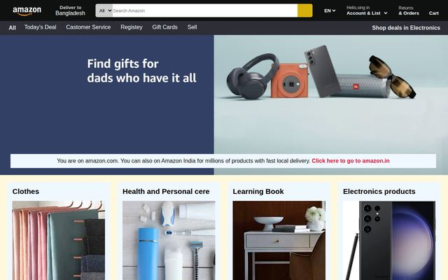
Amazon clone
Shopping home page with product category cards.
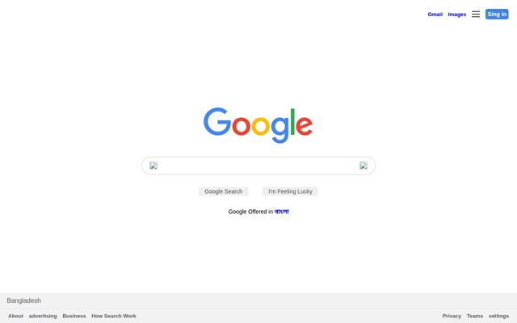
Google home page
Google search home page clone.
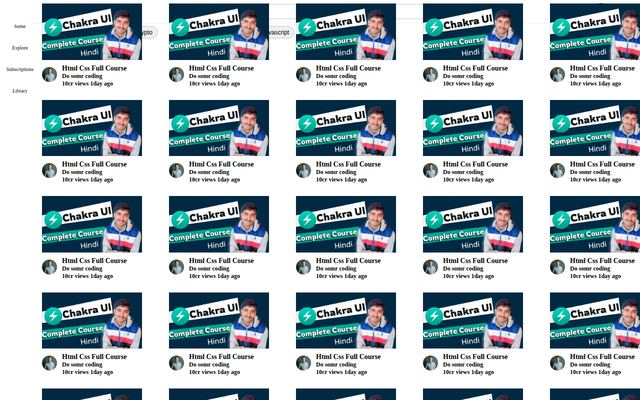
YouTube clone
YouTube home page layout with video grid and sidebar.
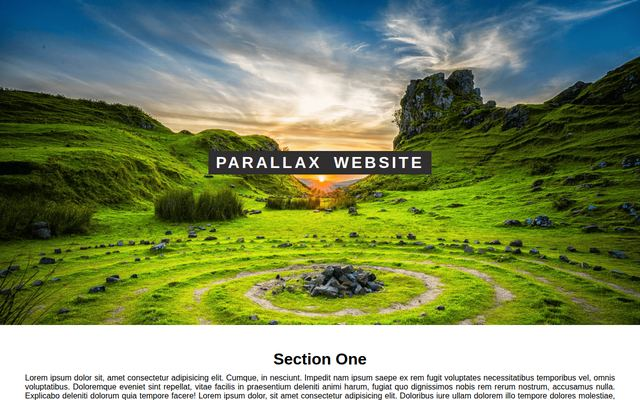
Parallax website
Parallax scrolling with full-screen nature sections.
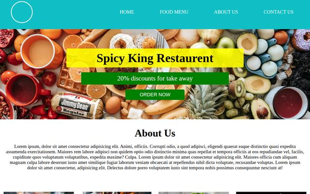
Spicy King restaurant
Restaurant website with menu and about sections.
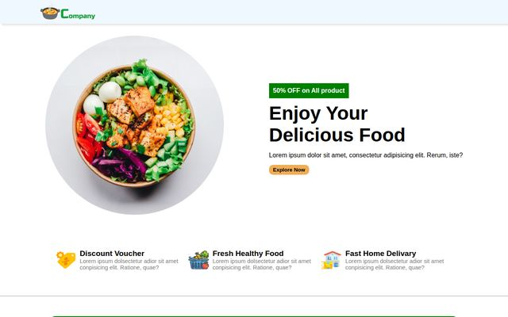
Restaurant landing page
Food delivery landing page with offers and menu.
University website
University site with courses and campuses sections.
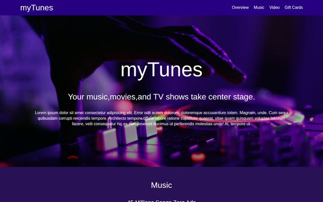
myTunes music site
Music streaming landing page.
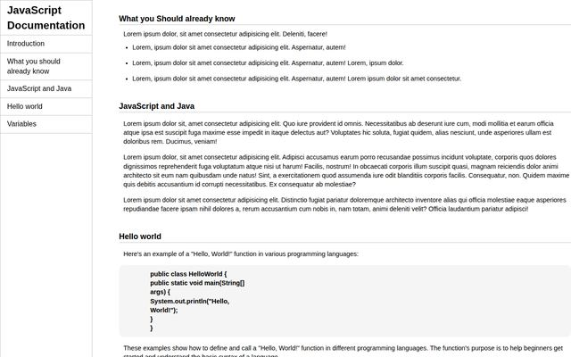
Documentation page
Technical docs layout with a side navigation.
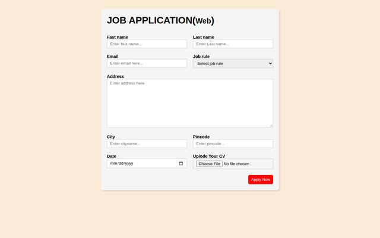
Job application form
Form layout with inputs, select and file upload.
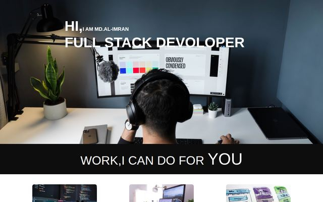
Developer landing page
Personal full-stack developer landing page.
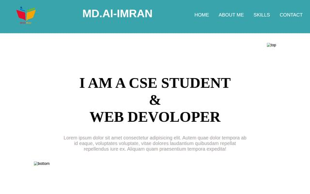
Portfolio page
Personal portfolio with about, skills and contact.
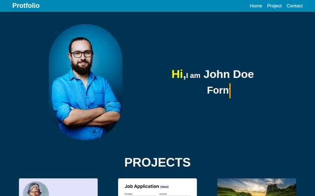
Portfolio template
Portfolio with a typing hero and projects section.
Biography page
Simple biography page.
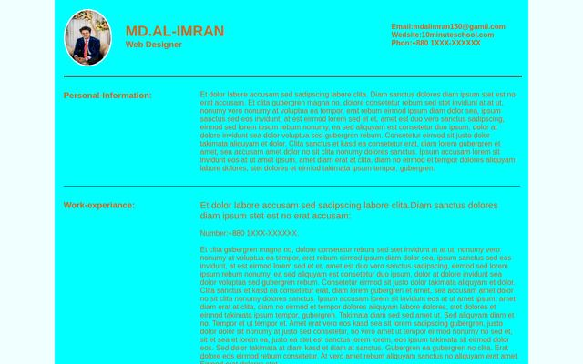
Simple page
Single page CV-style layout.